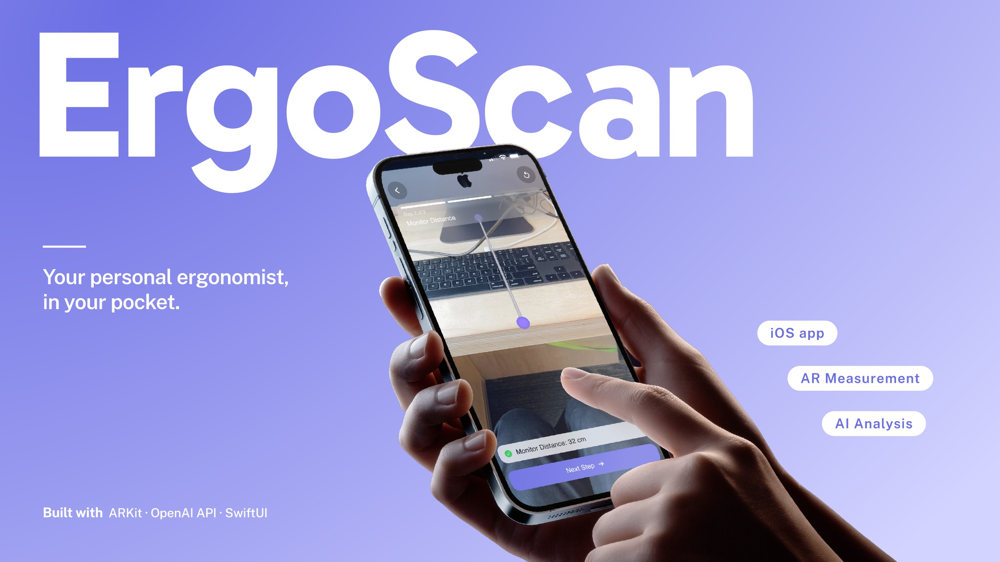
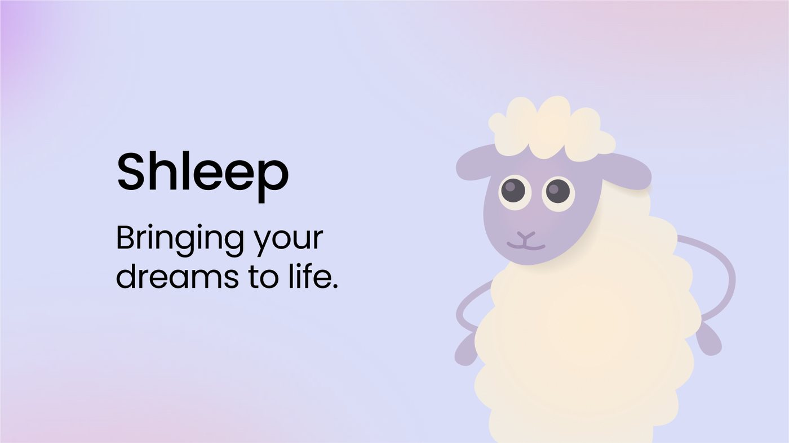
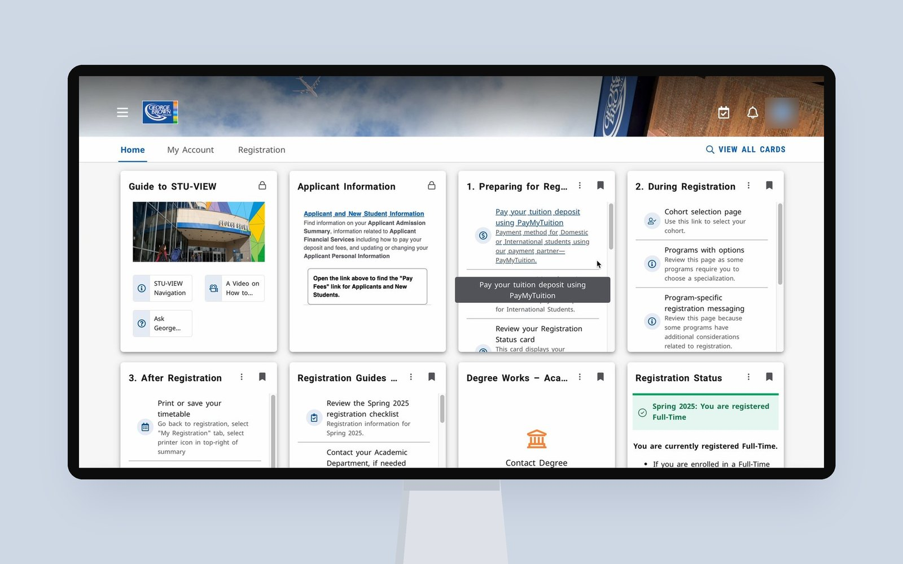

I'm an Interaction Design student in Toronto.
I tune the small details until products feel right
for the people using them.



Want to know who's behind it?
Meet SujiI trained as a classical singer before I trained as a designer. I grew up with voice and piano, and spent years fixing small things until they sounded right.
Design gave me the same feeling in a new form. I'm a third-year Interaction Design student at George Brown Polytechnic. I like work where a small detail changes how a whole experience feels, like ErgoScan, an AR app that helps people sit better. I start with the real problem, not the screen, and I keep testing until the solution feels obvious to the person using it.
AI is my fastest collaborator. I stay current with new tools so I can move quickly, but I decide what's worth building.
I'm looking for a UX/product design internship in Toronto. I want to work on products that people use every day, with a team that cares about the small details.
RGD Student Award 2026Honorable Mention
ErgoScan is an iOS app that measures your workspace with AR and analyzes it with AI, so you can fix your setup yourself. No expert, no cost.
The problem
Many people spend 8+ hours a day at their desk.
Without realizing it, they adjust to their setup. They slouch a little more and strain a little further, and the damage adds up.
01
People know bad posture is harmful, but can't tell what's wrong with their own setup.
02
Even when they want to fix it, they don't know where to start.
03
Professional assessments exist, but they're too expensive and inconvenient for everyday use.
My role
Process
01
The project started with the full flow: measure, a quick assessment, AI analysis, then save to history.
02
I designed every screen, from wireframes to the final UI in Figma.
03
I built the front end in Xcode with SwiftUI and ARKit, using Claude to help with the code.
04
Two rounds: classmates at an in-class showcase, then a survey with about 20 visitors at our year-end show.
UX flow. Open full size ↗
What testing changed
Challenge 1 · Measuring
Free tap to place points on a small camera view. During the in-class showcase, testers weren't sure where to tap and couldn't aim precisely.
A crosshair and a plus button on a full-screen camera. People already know this from iPhone's Measure app, so there's nothing new to learn and fewer misplaced points.
Challenge 2 · Results
Raw measurements in a flat list, colored by brand instead of status. Related info was spread across the screen, and each card had too much text to scan.
A score you can read at a glance, using traffic light colors (green, yellow, red). What needs fixing comes first, and each measurement lives in one card.
Final solution
01 · Measure
Viewing height, monitor distance and keyboard position, each measured by aiming and tapping. A quick two-question check covers elbows and wrists.
02 · Analyze
The score shows how your setup is doing. Anything that needs improvement comes first, with a specific fix and why it matters.
03 · Track
Every scan is saved, so you can compare setups and see your score change over time.
Impact
At our year-end show, visitors told us this wasn't just a school project. It was something they'd actually use at their own desk.
ErgoScan also received an Honorable Mention at the RGD Student Awards 2026. The judges pointed to the clear problem, the user flow, and the accessibility.
Reflection
“The submission clearly explained both the problem and how the design solved it.”
Next project
Making sense of what happens while you sleep →
FigBuild 2026Figma's student design-a-thon
Shleep is a speculative sleep and dream tracking concept set in 2036. A mattress topper and an earpiece read your body and brain at night, and the app turns that data into visuals and simple insights.
The problem
But most of it happens while you're asleep, out of reach.
Many people track their health and still wake up feeling off. There is no tool that helps them read what their sleep and dreams are trying to tell them.
01
Interoception is how your body senses its own state, like heart rate, breathing and muscle tension. Most people feel these signals but misread them.
02
Some of the richest signals happen while we sleep and dream, so we never see them.
03
Health-aware adults, around 20 to 50, who want to understand what their body is doing while they sleep.
My role
The concept
Tracks movement, heart rate and breathing, and maps how your body shifts through the night. Small vibrations gently guide you toward better sleep.
Tracks brain activity and ambient sound during sleep, to paint a fuller picture of what happens in your dreams.
Pulls in data from both and turns it into nightly dream and body breakdowns, with insights you can act on.
Final solution
01 · Shleep Talk
When something keeps showing up in your sleep and dream data, Shleep starts a conversation. You get a recap of last night, a short visual of the dream, and a gentle check-in on how you feel, so you can notice a feeling you might have missed.
02 · Shleep Insights
Insights shows your body's rhythms and your brain's activity overnight. Every chart comes with a simple explanation, so the data never feels overwhelming.
03 · Build Your Dream
Upload a photo, audio, video or text to design a dream. The earpiece and mattress topper then send gentle signals during sleep to bring it to life.
Designed with care
No third-party data sharing. All sleep and body data stays on your device, protected by Face ID or a password, and you can delete it any time.
Dream imagery is checked before it reaches you. Violence, trauma and explicit content are never generated. Built dreams are limited to 2 a month to protect natural sleep, and you can stop or change a dream at any point.
If signs of distress show up in your sleep data, the app offers a gentle check-in. It is not a diagnosis, and crisis resources are always one tap away.
Next project
Finding out why students get lost in their own portal →
UX researchSolo project
A moderated usability study of Stu-View, George Brown's student portal. I watched 5 students try 4 common tasks to find where and why they got stuck.
The problem
Stu-View is where George Brown students find their records, registration, tuition and campus services. Some important tasks, like applying for awards or replacing a photo ID, are hidden behind vague labels and many cards.
I wanted to find out where students get stuck, and why.
My role
Method
5 Interaction Design students who already use Stu-View. Average familiarity was 3.6 out of 5.
In person on campus, using Safari on my MacBook. About 20 minutes each, with the screen recorded.
Task success, time on task, critical and non-critical errors, difficulty ratings, and what people said while thinking aloud.
Results
| Task | Completion | Avg. time | Critical errors | Non-critical errors | Difficulty (1 to 5) |
|---|---|---|---|---|---|
| Task 1Student awards | 100% | 56s | 0 | 2 | 2.8 |
| Task 2Payment plan | 60% | 36s | 2 | 2 | 2.4 |
| Task 3Photo ID | 80% | 128s | 1 | 1 | 4.6 |
| Task 4Class schedule | 100% | 103s | 0 | 2 | 2.2 |
Difficulty: 5 is the hardest.
Key findings
01 · Layout
The homepage is a grid of cards. Participants called it cluttered and confusing, and important links often sat at the bottom of a card, so people had to scroll inside it.
Recommendation Replace the cards with a structured menu, and surface seasonal actions, like "Register for Courses" during enrollment.
02 · Homepage space
A wide banner took up the top with only a Help Desk link. Two locked cards for applicants sat right below it, even though they are not useful for enrolled students.
Recommendation A simple three-part homepage: a top navigation bar, 5 or 6 quick actions, and a dashboard students can customize.
“The cards are not clear to navigate to what I am looking for.”Participant
03 · Labels
People went back and forth between "My Account" and "Registration". Labels were long or unclear, like "Check your timetable (Schedule) frequently".
Recommendation Group features under clear parent categories, and use short action labels, like "View Timetable" or "Photo ID Reissue".
“Reorganize it, set the categories right starting with the titles.”Participant
Final report
I summed up the study on one page: the tasks, the results, what participants said, and a recommendation for each issue.
Open the full report ↗Next project
Turning a desk scan into posture fixes anyone can make →